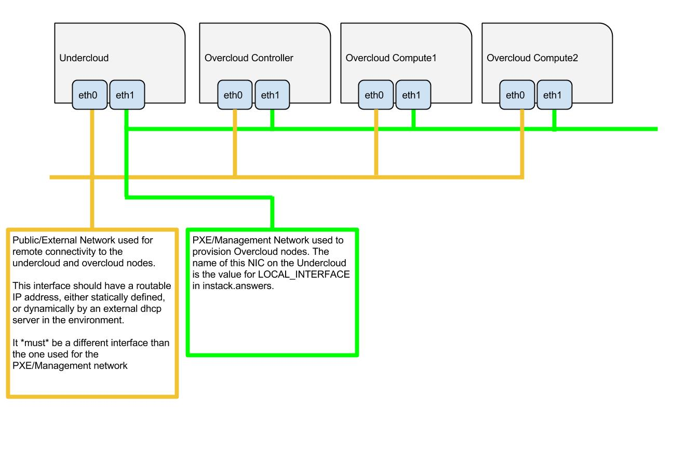

TripleO can be used in baremetal as well as in virtual environments. This section contains instructions on how to setup your environments properly.
TripleO can be used in a virtual environment using virtual machines instead of actual baremetal. However, one baremetal machine is still needed to act as the host for the virtual machines.
By default, this setup creates 3 virtual machines:
Each virtual machine must consist of at least 4 GB of memory and 40 GB of disk space [1].
Note
The virtual machine disk files are thinly provisioned and will not take up the full 40GB initially.
The baremetal machine must meet the following minimum system requirements:
TripleO currently supports the following operating systems:
RHEL Portal Registration
Register the host machine using Subscription Management.:
sudo subscription-manager register --username="[your username]" --password="[your password]" # Find this with `subscription-manager list --available` sudo subscription-manager attach --pool="[pool id]" # Verify repositories are available sudo subscription-manager repos --list # Enable repositories needed sudo subscription-manager repos --enable=rhel-7-server-rpms \ --enable=rhel-7-server-optional-rpms --enable=rhel-7-server-extras-rpms \ --enable=rhel-7-server-openstack-6.0-rpmsRHEL Satellite Registration
To register the host machine to a Satellite, the following repos must be synchronized on the Satellite:
rhel-7-server-rpms rhel-7-server-optional-rpms rhel-7-server-extras-rpms rhel-7-server-openstack-6.0-rpmsSee the Red Hat Satellite User Guide for how to configure the system to register with a Satellite server. It is suggested to use an activation key that automatically enables the above repos for registered systems.
Make sure sshd service is installed and running.
The user performing all of the installation steps on the virt host needs to have sudo enabled. You can use an existing user or use the following commands to create a new user called stack with password-less sudo enabled. Do not run the rest of the steps in this guide as root.
Example commands to create a user:
sudo useradd stack
sudo passwd stack # specify a password
echo "stack ALL=(root) NOPASSWD:ALL" | sudo tee -a /etc/sudoers.d/stack
sudo chmod 0440 /etc/sudoers.d/stack
Make sure you are logged in as the non-root user you intend to use.
Example command to log in as the non-root user:
su - stack
Enable needed repositories:
Enable epel:
sudo yum -y install epel-release
Enable last known good RDO Trunk Delorean repository for core openstack packages
sudo curl -o /etc/yum.repos.d/delorean.repo http://trunk.rdoproject.org/centos7/current-tripleo/delorean.repoEnable latest RDO Trunk Delorean repository only for the TripleO packages
sudo curl -o /etc/yum.repos.d/delorean-current.repo http://trunk.rdoproject.org/centos7/current/delorean.repo sudo sed -i 's/\[delorean\]/\[delorean-current\]/' /etc/yum.repos.d/delorean-current.repo sudo /bin/bash -c "cat <<EOF>>/etc/yum.repos.d/delorean-current.repo includepkgs=diskimage-builder,instack,instack-undercloud,os-apply-config,os-cloud-config,os-collect-config,os-net-config,os-refresh-config,python-tripleoclient,tripleo-common,openstack-tripleo-heat-templates,openstack-tripleo-image-elements,openstack-tripleo,openstack-tripleo-puppet-elements,openstack-puppet-modules EOF"Enable the Delorean Deps repository
sudo curl -o /etc/yum.repos.d/delorean-deps.repo http://trunk.rdoproject.org/centos7/delorean-deps.repoStable Branch
Skip all repos mentioned above, other than epel-release which is still required.
Enable latest RDO Stable Delorean repository for all packages
sudo curl -o /etc/yum.repos.d/delorean-liberty.repo https://trunk.rdoproject.org/centos7-liberty/current/delorean.repoEnable the Delorean Deps repository
sudo curl -o /etc/yum.repos.d/delorean-deps-liberty.repo http://trunk.rdoproject.org/centos7-liberty/delorean-deps.repo
Install instack-undercloud:
sudo yum install -y instack-undercloud
The virt setup automatically sets up a vm for the Undercloud installed with the same base OS as the host. See the Note below to choose a different OS:
Note
To setup the undercloud vm with a base OS different from the host, set the $NODE_DIST environment variable prior to running instack-virt-setup:
CentOS
export NODE_DIST=centos7
RHEL
export NODE_DIST=rhel7
Run the script to setup your virtual environment:
Note
By default, the overcloud VMs will be created with 1 vCPU and 5120 MiB RAM and the undercloud VM with 2 vCPU and 6144 MiB. To adjust those values:
export NODE_CPU=4 export NODE_MEM=16384Note the settings above only influence the VMs created for overcloud deployment. If you want to change the values for the undercloud node:
export UNDERCLOUD_NODE_CPU=4 export UNDERCLOUD_NODE_MEM=16384RHEL
Download the RHEL 7.1 cloud image or copy it over from a different location, for example: https://access.redhat.com/downloads/content/69/ver=/rhel—7/7.1/x86_64/product-downloads, and define the needed environment variables for RHEL 7.1 prior to running instack-virt-setup:
export DIB_LOCAL_IMAGE=rhel-guest-image-7.1-20150224.0.x86_64.qcow2RHEL Portal Registration
To register the Undercloud vm to the Red Hat Portal define the following variables:
export REG_METHOD=portal export REG_USER="[your username]" export REG_PASSWORD="[your password]" # Find this with `sudo subscription-manager list --available` export REG_POOL_ID="[pool id]" export REG_REPOS="rhel-7-server-rpms rhel-7-server-extras-rpms rhel-ha-for-rhel-7-server-rpms \ rhel-7-server-optional-rpms rhel-7-server-openstack-6.0-rpms"RHEL Satellite Registration
To register the Undercloud vm to a Satellite define the following variables. Only using an activation key is supported when registering to Satellite, username/password is not supported for security reasons. The activation key must enable the repos shown:
export REG_METHOD=satellite # REG_SAT_URL should be in the format of: # http://<satellite-hostname> export REG_SAT_URL="[satellite url]" export REG_ORG="[satellite org]" # Activation key must enable these repos: # rhel-7-server-rpms # rhel-7-server-optional-rpms # rhel-7-server-extras-rpms # rhel-7-server-openstack-6.0-rpms export REG_ACTIVATION_KEY="[activation key]"Ceph
To use Ceph you will need at least one additional virtual machine to be provisioned as a Ceph OSD; set the NODE_COUNT variable to 3, from a default of 2, so that the overcloud will have exactly one more:
export NODE_COUNT=3Note
The TESTENV_ARGS environment variable can be used to customize the virtual environment configuration. For example, it could be used to enable additional networks as follows:
export TESTENV_ARGS="--baremetal-bridge-names 'brbm brbm1 brbm2'"Note
The LIBVIRT_VOL_POOL and LIBVIRT_VOL_POOL_TARGET environment variables govern the name and location respectively for the storage pool used by libvirt. The defaults are the ‘default’ pool with target /var/lib/libvirt/images/. These variables are useful if your current partitioning scheme results in insufficient space for running any useful number of vms (see the Minimum Requirements):
# you can check the space available to the default location like df -h /var/lib/libvirt/images # If you wish to specify an alternative pool name: export LIBVIRT_VOL_POOL=tripleo # If you want to specify an alternative target export LIBVIRT_VOL_POOL_TARGET=/home/vm_storage_poolIf you don’t have a ‘default’ pool defined at all, setting the target is sufficient as the default will be created with your specified target (and directories created as necessary). It isn’t possible to change the target for an existing volume pool with this method, so if you already have a ‘default’ pool and cannot remove it, you should also specify a new pool name to be created.
instack-virt-setupIf the script encounters problems, see Troubleshooting instack-virt-setup Failures.
When the script has completed successfully it will output the IP address of the instack vm that has now been installed with a base OS.
Running sudo virsh list --all [2] will show you now have one virtual machine called instack and 2 called baremetal[0-1].
You can ssh to the instack vm as the root user:
ssh root@<instack-vm-ip>
The vm contains a stack user to be used for installing the undercloud. You can su - stack to switch to the stack user account.
Continue with Undercloud Installation.
Footnotes
| [1] | Note that some default partitioning schemes may not provide enough space to the partition containing the default path for libvirt image storage (/var/lib/libvirt/images). The easiest fix is to export the LIBVIRT_VOL_POOL_TARGET and LIBVIRT_VOL_POOL parameters in your environment prior to running instack-virt-setup above (see note there). Alternatively you can just customize the partition layout at the time of install to provide at least 200 GB of space for that path. |
| [2] | The libvirt virtual machines have been defined under the system instance (qemu:///system). The user account executing these instructions gets added to the libvirtd group which grants passwordless access to the system instance. It does however require logging into a new shell (or desktop environment session if wanting to use virt-manager) before this change will be fully applied. To avoid having to re-login, you can use sudo virsh. |
TripleO can be used in an all baremetal environment. One machine will be used for Undercloud, the others will be used for your Overcloud.
To deploy a minimal TripleO cloud with TripleO you need the following baremetal machines:
For each additional Overcloud role, such as Block Storage or Object Storage, you need an additional baremetal machine.
The baremetal machines must meet the following minimum specifications:
TripleO is supporting only the following operating systems:
The overcloud nodes will be deployed from the undercloud machine and therefore the machines need to have have their network settings modified to allow for the overcloud nodes to be PXE boot’ed using the undercloud machine. As such, the setup requires that:
Refer to the following diagram for more information
Select a machine within the baremetal environment on which to install the undercloud.
Install RHEL 7.1 x86_64 or CentOS 7 x86_64 on this machine.
If needed, create a non-root user with sudo access to use for installing the Undercloud:
sudo useradd stack
sudo passwd stack # specify a password
echo "stack ALL=(root) NOPASSWD:ALL" | sudo tee -a /etc/sudoers.d/stack
sudo chmod 0440 /etc/sudoers.d/stack
RHEL
If using RHEL, register the Undercloud for package installations/updates.
RHEL Portal Registration
Register the host machine using Subscription Management:
sudo subscription-manager register --username="[your username]" --password="[your password]"
# Find this with `subscription-manager list --available`
sudo subscription-manager attach --pool="[pool id]"
# Verify repositories are available
sudo subscription-manager repos --list
# Enable repositories needed
sudo subscription-manager repos --enable=rhel-7-server-rpms \
--enable=rhel-7-server-optional-rpms --enable=rhel-7-server-extras-rpms \
--enable=rhel-7-server-openstack-6.0-rpms
RHEL Satellite Registration
To register the host machine to a Satellite, the following repos must be synchronized on the Satellite and enabled for registered systems:
rhel-7-server-rpms
rhel-7-server-optional-rpms
rhel-7-server-extras-rpms
rhel-7-server-openstack-6.0-rpms
See the Red Hat Satellite User Guide for how to configure the system to register with a Satellite server. It is suggested to use an activation key that automatically enables the above repos for registered systems.
Create a JSON file describing your Overcloud baremetal nodes, call it instackenv.json and place in your home directory. The file should contain a JSON object with the only field nodes containing list of node descriptions.
Each node description should contains required fields:
Some fields are optional if you’re going to use introspection later:
It is also possible (but optional) to set Ironic node capabilities directly in the JSON file. This can be useful for assigning node profiles or setting boot options at registration time:
capabilities - Ironic node capabilities. For example:
"capabilities": "profile:compute,boot_option:local"
For example:
{
"nodes": [
{
"pm_type":"pxe_ipmitool",
"mac":[
"fa:16:3e:2a:0e:36"
],
"cpu":"2",
"memory":"4096",
"disk":"40",
"arch":"x86_64",
"pm_user":"admin",
"pm_password":"password",
"pm_addr":"10.0.0.8"
},
{
"pm_type":"pxe_ipmitool",
"mac":[
"fa:16:3e:da:39:c9"
],
"cpu":"2",
"memory":"4096",
"disk":"40",
"arch":"x86_64",
"pm_user":"admin",
"pm_password":"password",
"pm_addr":"10.0.0.15"
},
{
"pm_type":"pxe_ipmitool",
"mac":[
"fa:16:3e:51:9b:68"
],
"cpu":"2",
"memory":"4096",
"disk":"40",
"arch":"x86_64",
"pm_user":"admin",
"pm_password":"password",
"pm_addr":"10.0.0.16"
}
]
}
Ironic drivers provide various level of support for different hardware. The most up-to-date information about Ironic drivers is at http://docs.openstack.org/developer/ironic/deploy/drivers.html, but note that this page always targets Ironic git master, not the release we use.
There are 2 generic drivers:
Ironic also provides specific drivers for some types of hardware:
There are also 2 testing drivers: